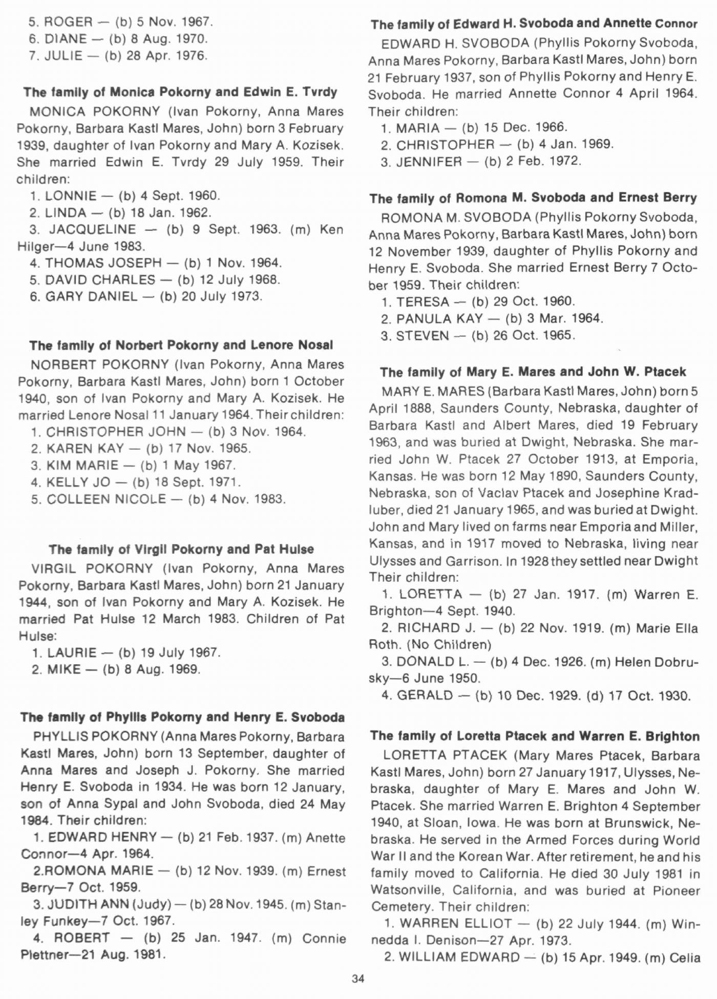

The book · The Family of John Kastl
Page 34 The family of Monica Pokorny and Edwin E. Tvrdy


Transcription
- ROGER — (b) 5 Nov. 1967.
- DIANE — (b) 8 Aug. 1970.
- JULIE — (b) 28 Apr. 1976.
The family of Monica Pokorny and Edwin E. Tvrdy
MONICA POKORNY (Ivan Pokorny, Anna Mares Pokorny, Barbara Kastl Mares, John) born 3 February 1939, daughter of Ivan Pokorny and Mary A. Kozisek. She married Edwin E. Tvrdy 29 July 1959. Their children:
- LONNIE — (b) 4 Sept. 1960.
- LINDA — (b) 18 Jan. 1962.
- JACQUELINE — (b) 9 Sept. 1963. (m) Ken Hilger—4 June 1983.
- THOMAS JOSEPH — (b) 1 Nov. 1964.
- DAVID CHARLES — (b) 12 July 1968.
- GARY DANIEL — (b) 20 July 1973.
The family of Norbert Pokorny and Lenore Nosal
NORBERT POKORNY (Ivan Pokorny, Anna Mares Pokorny, Barbara Kastl Mares, John) born 1 October 1940, son of Ivan Pokorny and Mary A. Kozisek. He married Lenore Nosal 11 January 1964. Their children:
- CHRISTOPHER JOHN — (b) 3 Nov. 1964.
- KAREN KAY — (b) 17 Nov. 1965.
- KIM MARIE — (b) 1 May 1967.
- KELLY JO — (b) 18 Sept. 1971.
- COLLEEN NICOLE — (b) 4 Nov. 1983.
The family of Virgil Pokorny and Pat Hulse
VIRGIL POKORNY (Ivan Pokorny, Anna Mares Pokorny, Barbara Kastl Mares, John) born 21 January 1944, son of Ivan Pokorny and Mary A. Kozisek. He married Pat Hulse 12 March 1983. Children of Pat Hulse:
- LAURIE — (b) 19 July 1967.
- MIKE — (b) 8 Aug. 1969.
The family of Phyllis Pokorny and Henry E. Svoboda
PHYLLIS POKORNY (Anna Mares Pokorny, Barbara Kastl Mares, John) born 13 September, daughter of Anna Mares and Joseph J. Pokorny. She married Henry E. Svoboda in 1934. He was born 12 January, son of Anna Sypal and John Svoboda, died 24 May 1984. Their children:
- EDWARD HENRY — (b) 21 Feb. 1937. (m) Anette Connor—4 Apr. 1964.
- ROMONA MARIE — (b) 12 Nov. 1939. (m) Ernest Berry—7 Oct. 1959.
- JUDITH ANN (Judy) — (b) 28 Nov. 1945. (m) Stanley Funkey—7 Oct. 1967.
- ROBERT — (b) 25 Jan. 1947. (m) Connie Plettner—21 Aug. 1981.
The family of Edward H. Svoboda and Annette Connor
EDWARD H. SVOBODA (Phyllis Pokorny Svoboda, Anna Mares Pokorny, Barbara Kastl Mares, John) born 21 February 1937, son of Phyllis Pokorny and Henry E. Svoboda. He married Annette Connor 4 April 1964. Their children:
- MARIA — (b) 15 Dec. 1966.
- CHRISTOPHER — (b) 4 Jan. 1969.
- JENNIFER — (b) 2 Feb. 1972.
The family of Romona M. Svoboda and Ernest Berry
ROMONA M. SVOBODA (Phyllis Pokorny Svoboda, Anna Mares Pokorny, Barbara Kastl Mares, John) born 12 November 1939, daughter of Phyllis Pokorny and Henry E. Svoboda. She married Ernest Berry 7 October 1959. Their children:
- TERESA — (b) 29 Oct. 1960.
- PANULA KAY — (b) 3 Mar. 1964.
- STEVEN — (b) 26 Oct. 1965.
The family of Mary E. Mares and John W. Ptacek
MARY E. MARES (Barbara Kastl Mares, John) born 5 April 1888, Saunders County, Nebraska, daughter of Barbara Kastl and Albert Mares, died 19 February 1963, and was buried at Dwight, Nebraska. She married John W. Ptacek 27 October 1913, at Emporia, Kansas. He was born 12 May 1890, Saunders County, Nebraska, son of Vaclav Ptacek and Josephine Kradluber, died 21 January 1965, and was buried at Dwight. John and Mary lived on farms near Emporia and Miller, Kansas, and in 1917 moved to Nebraska, living near Ulysses and Garrison. In 1928 they settled near Dwight Their children:
- LORETTA — (b) 27 Jan. 1917. (m) Warren E. Brighton—4 Sept. 1940.
- RICHARD J. — (b) 22 Nov. 1919. (m) Marie Ella Roth. (No Children)
- DONALD L. — (b) 4 Dec. 1926. (m) Helen Dobrusky—6 June 1950.
- GERALD — (b) 10 Dec. 1929. (d) 17 Oct. 1930.
The family of Loretta Ptacek and Warren E. Brighton
LORETTA PTACEK (Mary Mares Ptacek, Barbara Kastl Mares, John) born 27 January 1917, Ulysses, Nebraska, daughter of Mary E. Mares and John W. Ptacek. She married Warren E. Brighton 4 September 1940, at Sloan, Iowa. He was born at Brunswick, Nebraska. He served in the Armed Forces during World War II and the Korean War. After retirement, he and his family moved to California. He died 30 July 1981 in Watsonville, California, and was buried at Pioneer Cemetery. Their children:
- WARREN ELLIOT — (b) 22 July 1944. (m) Winnedda I. Denison—27 Apr. 1973.
- WILLIAM EDWARD — (b) 15 Apr. 1949. (m) Celia
Transcriber’s notes
Two columns. Page opens with children 5-7 of Lawrence Pokorny and Jean Birkel (continued from p. 33). Name forms kept as printed: 'Annette Connor' in heading/paragraph vs 'Anette Connor' in the child list; 'PANULA KAY'; '2.ROMONA MARIE' (no space in print). Phyllis Pokorny birth date and Henry E. Svoboda birth date lack years in print. 'In 1928 they settled near Dwight' has no period in print. Last child item (WILLIAM EDWARD) runs on to next page.